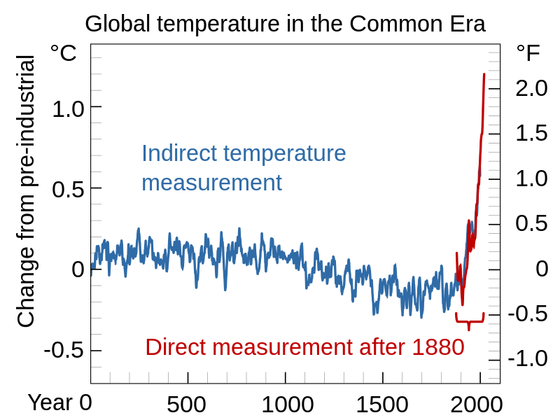
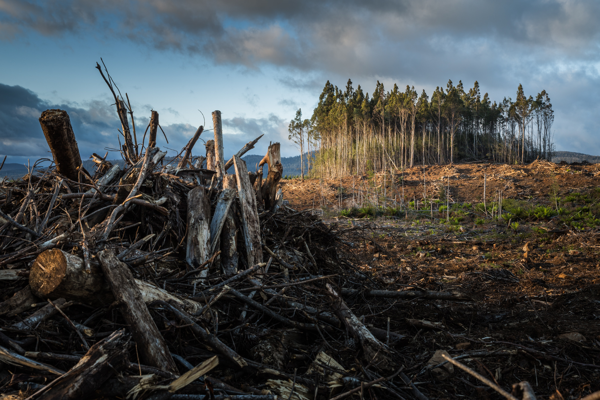

기후변화

현대의 기후 위기(氣候 危機, 영어: climate crisis), 기후 비상사태(climate emergency)
혹은 기후 변화(climate change)는 지구 온난화처럼 지구의 평균 기온이 점진적으로 상승함과
함께 전지구적 기후 패턴이 급격하게 변화하는 현상을 통틀어 일컫는다. 현대 이전에도 기후
변화가 존재하긴 했지만, 현대의 기후 변화는 급격하며 자연적인 이유로 발생하는 현상이 아니다.
현재의 급격한 기후 변화는 인간이 이산화탄소(CO2)와 메테인과 같은 온실 기체를 방출해
일어난 현상이다. 인간이 방출한 온실 기체의 절대다수는 에너지를 사용하기 위해 화석 연료를
태워서 만들어진 것이다. 그 외에도 농업, 제강, 시멘트 생산, 산림 손실로 온실 기체가
방출되고 있다. 온실 기체는 햇빛을 투과하기 때문에 햇빛이 지구 표면을 가열한다.
하지만 지구가 적외선 복사로 열을 우주로 방출할 때 온실 기체가 복사열을 흡수하여 지상에
열을 가둔다. 가둬진 열로 지구가 점점 뜨거워지면서 태양빛을 반사하는 반사율이 높은 만년설
표면이 사라지는 등 지상에 여러 변화를 일으켜 지구 온난화를 가속시킨다.
육지는 지구 전체 평균보다 기온이 약 2배 빠르게 상승했다. 사막은 점점 넓어지고 있으며
폭염과 산불 횟수도 점점 늘어나고 있다. 북극에서 심화되는 온난화로 영구동토층이
녹고 있으며 빙하와 해빙이 점차 사라지고 있다. 기온이 증가하며 더 강력한 폭풍이
만들어지며 기상이변도 불러일으키고 있다. 산호초, 산, 북극 등지에서는 급격한 환경
변화로 수많은 종들이 강제로 이주하거나 멸종하고 있다. 기후 변화는 식량과 물 부족,
홍수 증가, 극심한 폭염, 질병의 만연화, 경제적 손실 등 다양한 상황으로 인간을 위협한다.
또한 기후 변화 그 자체로 난민을 만들기도 한다. 세계 보건 기구(WHO)는 기후
변화를 21세기 세계 보건에게 끼칠 가장 큰 위협이라고 전망했다. 미래에 온난화를
최소화하려는 노력이 성공하더라도 수 세기 동안 지구는 다양한 영향을 받을 것이다.
대표적인 예로 해수면 상승, 해양 산성화 및 온난화 등이 있다.
기후 변화가 주는 다양한 영향은 현재 수준의 기온 상승인 약 1.2 °C 상승 시점에서도
이미 나타나고 있다. 기후 변화에 관한 정부간 협의체(IPCC)는 온난화로 1.5 °C 이상
상승할 경우 지구에 돌이킬 수 없는 더 큰 영향을 미칠 것이라 경고하고 있다.온난화가
계속될 경우 그린란드 빙상의 융해처럼 티핑 포인트(tipping points)에 닿을 상황에
처할 위기로 몰아넣는다.이런 변화에 대응하는 방법으로는 온난화 수준을 제한시키는
행동을 취하거나, 이런 변화에 적응하는 방법이 있다.앞으로 지속될 온난화는
온실 기체 배출량을 줄이고 대기의 온실 기체를 제거해서 증가 수준을 줄일 수 있다.
온실 기체 배출량을 줄이는 데에는 풍력이나 태양 에너지 등 지속 가능 에너지의
사용을 늘리고 석탄 사용량을 점차 줄이며, 사용하는 에너지의 효율성을 높여 절약하는
방법이 있다. 기존의 화석 연료로 작동하는 탈것을 전기 차량으로 대체하고
가정과 건물에 열펌프를 사용하면 배출량이 더욱 감소할 것이다. 산림 벌채를
막고 숲을 늘리면 대기 중의 이산화탄소를 흡수하는 데 도움을 줄 수 있다.
지역 사회는 해안선 관리와 재난 상황 관리책을 강화하고 기후 변화에 저항력이
더 높은 작물을 개발하는 등의 방법으로 기후 변화에 적응할 수 있다. 하지만
이런 적응책만으로는 심각하고 광범위하며 영구적인 기후 변화의 위협으로
나타날 피해를 피할 수 없다.
2015년 채택된 파리 협정으로 전세계 각국은 기후 변화 완화를 노력하여 "최대 2
°C 상승" 이하를 유지하기로 합의하였다. 하지만 협정을 완전히 준수하더라도
21세기 말까지 지구 평균 기온은 약 2.7 °C 상승할 것이다. 온난화 수준을
1.5 °C 이하로 제한하기 위해서는 2030년까지 온실 기체 배출량을 절반으로
줄여야 하고, 2050년까지 온실 기체 순배출량을 0(net-zero)으로 만들어야
한다.
관측된 기온 상승

과거 2,000년간의 온도 기록을 재구성한 그래프. 파랑 선은 나이테, 산호초, 북극 아이스 코어 등 간접적인 데이터를 이용해서 추정한 온도 기록이다.[31] 빨강 선은 온도계를 통해 직접적으로 관측한 온도 기록이다.[32]
여러 독립적인 측정 데이터세트에서는 현 지구의 기후가 온난화되고 있음을
보여주고 있다.[33] 2011년에서 2020년 사이 10년간은 산업화 이전 기준선인
1850년-1900년 사이 평균 기온보다 평균 1.09 °C (오차 감안 0.95–1.20 °C)
상승하였다.[34] 지상 기온은 10년마다 평균 0.2 °C 상승하고 있으며,[35]
2020년 기준 산업화 이전보다 1.2 °C 더 상승한 상태이다.[36] 1950년대
이후부터 전세계적으로 추운 날의 수가 더 줄어들고 있으며, 따뜻한 날의
수가 더 늘어나고 있다.[37]
18세기에서 19세기 중반 사이에는 순 온난화 현상이 거의 없었다. 이 시기의 기후
정보는 나무의 나이테나 아이스 코어 같은 간접 관측 기록을 이용해 추정한다. 이런
자료를 통해 자연적인 변화 수치가 산업 혁명 초기의 영향을 상쇄시켰다는 것을 알아냈다.
[38] 온도계를 통한 직접적인 기온 관측 기록은 1850년대 경부터 전 세계에 나오기
시작했다.[39] 그 이전 중세 온난기나 소빙기 같은 역사적인 온난화 및 한랭화는
전 세계 다른 지역에서 동시다발적으로 발생하진 않았다. 특정한 한정된 지역에서는
기온이 잠깐 20세기 후반 수준으로 상승했을 수도 있었다.[40] 선사 시대에도
팔레오세-에오세 최대온난기 같은 전지구적 온난화 현상이 있었긴 했다.[41] 하지만
현대에 관측되고 있는 기온 상승과 이산화탄소 농도의 상승은 매우 빠르며 지구
역사상 일어났었던 그 어떤 지구물리학적 기후 급변 사건보다도 그 속도가 빠르다.[42]
측정한 기온으로 보이는 온난화의 증거는 광범위한 기타 다른 자료로도 보강된다.
[43][44] 일례로 폭우의 빈도와 그 강도가 더 강해지고 많아졌으며, 육지의 얼음과 눈이
녹았으며 대기의 평균 습도도 상승했다.[45] 또한 동식물군은 일례로 꽃이 점점
더 이른 봄에 피어나는 현상과 같이, 온난화와 일치하는 경향으로 생태가 변화하고
있다.[46] 또 다른 핵심적인 온난화 지표에는 대기 상층부의 한랭화 현상인데,
온실 기체가 지구 표면 근처에 열을 가둬버려 우주로 열이 방사되는 것을 막아
높은 고도에서의 기온이 시간이 지날수록 점차 낮아지고 있다.[47]
전 세계의 여러 지역마다 온난화의 진행 속도는 서로 다르다. 온난화 진행 속도
차이는 온실 기체가 방출되는 정도의 차이와 관계가 있는 것은 아니다. 온실
기체의 효과가 지구 전체에 골고루 퍼질 정도로 충분히 오래 유지되기 때문이다.
산업화 이전부터 육지의 평균 기온은 지구 전체의 평균 기온보다 거의 2배 빠르게
상승하였다.[48] 그 이유로는 바다가 육지보다 열용량이 더 크고 바다에서는
물의 증발로 더 많은 열을 잃기 쉽기 때문이다.[49] 지구의 기후 시스템의
열에너지는 1970년대 일시적인 답보 상태 이후로는 꾸준히 늘어났으며,
늘어난 여분의 열에너지 중 약 90% 이상이 바다에 저장되었다.[50][51]
나머지 열에너지는 대기를 데우고 얼음을 녹이며 육지를 덥히는 역할을 하였다.[52]
북반구와 북극은 남반구와 남극보다 더 빨리 따뜻해졌다. 북반구의 육지 면적이
훨씬 더 넓은 뿐 아니라, 계절의 변화에 따라 덮이는 눈과 해빙도 더 많다.
훨씬 더 많은 빛을 반사하는 표면이 있는 얼음이 녹아 더 어두운 흙이 노출되면
반사율이 낮아 더 많은 열을 흡수하기 시작한다.[53] 눈과 얼음에 쌓이는 검은
탄소도 북극 온난화의 원인이 된다.[54] 북극의 기온은 세계에서 가장 빠르게 증가하고 있으며 지구의 다른 지역보다 두 배 이상 빠르게 증가하고 있다.[55] 북극의 빙하와 빙상이 녹으면 멕시코 만류의 순환을 약화시키는 등 전 지구적인 해양 순환을 방해시켜 기후를 더욱 변화시킨다.[56]
원인

기후 시스템은 "외부 원인"으로 변화할 수 있다.[57] 외부 원인은 지구 온난화나 빙하기로 기후를 "변화"시킬 수 있다.[58] 외부 원인의 예로는, 대기 구성 물질의 변화(온실 기체의 증가 등), 화산 폭발 등으로 인한 태양광도 변화, 공전 궤도 변화 등이 있다.[59] 최근 기후 변화의 속성은 주로 첫 번째와 세 번째의 원인에 주목하고 있다. 인간에 의한 무분별한 자원남용이 가장 크게 대두되었으며 한편 밀란코비치 주기는 수만 년 동안 천천히 냉각 추세로 돌아서며 빙하기가 올 것을 예고했으나, 20세기 세계 온도 기록에서는 지구 기온은 급격한 상승을 보인다.[60]
온실 기체
이 부분의 본문은 온실 기체, 온실 효과, 복사 강제력 및 지구 대기의 이산화탄소입니다.
온실 효과는 지구의 표면과 대기권에서의 적외선 방출 스펙트럼 흡수 과정이다. 이것은 1824년 조제프 푸리에에 의해 창안되었고, 1896년 스반테 아레니우스에 의해 처음 조사가 이루어졌다.[61]
자연적인 온실가스 발생으로 인한 지구 온난화 효과로 평균 33 °C가 유지되고 있다.[62][62][63] 주요적인 온실 기체는 수증기이며 이는 온실 효과의 36–70%를 차지하고, 그 다음은 이산화탄소(CO2)로 9–26%를 차지하고, 메테인(CH4)은 4–9%이며 가장 낮은 온실 기체는 오존(O3)으로 3–7%를 차지한다.[64][65][66] 구름 또한 온실 기체와 유사한 영향을 가진다.
산업 혁명 이후 인간의 활동들로 인해 이산화탄소, 메탄, 대류권 오존, 프레온 기체[67], 아산화 질소 등의 오존 기체 발생량이 많아지게 되었다. 이산화탄소와 메탄 온실 기체는 1750년 이후 36%와 148% 증가했다.[68] 이러한 수준은 아이스 코어(ice core)로 측정한 신뢰 가능한 자료로 지난 80만년간 증가 수준보다 매우 높다.[69][70][71][72] 덜 직접적인 지질학적 증거로는 지난 2000만년보다 이산화탄소 수치가 더욱 높은 것으로 알 수 있다.[73] 화석 연료는 인간이 지난 20년간의 이산화탄소 생산 수치의 4분의 3을 차지한다. 나머지 상승분은 지표면의 변화, 특히 벌목과 농작물 생산증대를 위한 화학비료,살충제의 남용, 산업화 과정에서의 토양오염등으로 인해 발생한 결과이다.[74][75]
설명 참조
2005년 토지 이용 변화를 포함한 1인당 온실 기체 배출 순위.
설명 참조
2005년 토지 이용 변화를 포함한 총 온실 기체 배출량.
20세기의 지난 30년 동안, 국민 총생산 증가와 인구 증가는 온실 기체 배출 증가의 주요 원인이 되었다.[76] 이산화탄소 배출량은 화석 연료 이용과 토지 이용 변화로 인한 자연훼손 때문에 점점 증가하고 있다.[77][78]:71 온실 기체 배출은 다른 지역이 원인이 될 수도 있다. 2005년 토지 이용 변화를 포함한 연간 온실 기체 배출량 증가는 매우 빠르게 증가함을 보여준다. 또한, 인류가 숲과 나무를 파괴하여 온난화 현상이 심해진다는 가설도 있다. 또한 무제한적인 토지 이용 변화가 지구 온난화의 직접적인 원인중 하나임을 주요하게 언급하는 연구결과가 계속 보고되고있다.[79][80]:289
기후 변화 시나리오에 따르면, 미래의 온실 기체 배출량은 사회학적, 기술적 발달과 향후 자연 개발, 경제 성장 등 불확실한 정보에 따라 달라진다.[81] 대부분의 시나리오에서는 몇 세기 동안 배출량이 지속적으로 증가하지만 몇몇 시나리오에서는 배출량을 줄일 수 있다.[82][83] 화석 연료의 매장량은 풍부하며 21세기 동안 탄소 배출의 제한량이 존재하지 않는다.[84] 탄소의 순환을 이용한 배출량 시나리오는 향후 온실 기체의 농도와 변경 가능한 최소치를 계산하는 데 이용하였다. 6개의 IPCC 배출량 시나리오에 관한 특별 보고서(Special Report on Emissions Scenarios)의 "마커 시나리오"에 따르면, 2100년까지 대기 중 이산화탄소의 농도는 541에서 970ppm의 범위로 추정한다.[85] 이것은 1750년 증가분의 90-250%에 달하는 수치이다.
대중 매체와 대중은 종종 지구 온난화와 프레온 가스로 인한 성층권의 오존층 파괴를 혼동한다.[86][87] 몇 가지 지구 온난화와 오존층과의 관련은 있지만, 둘 사이의 관계는 강하지 않다. 성층권 오존의 파괴는 표면 온도의 냉각에 약간의 영향을 끼친 반면 오히려 대류권 오존(tropospheric ozone)이 지구 온난화에 더 큰 영향을 미쳤다.[88]
미립자와 먼지
Refer to caption
대서양 미국 동부 해안의 배 자취(Ship tracks). 미립자의 기후적 영향은 간접적 영향을 통해 기후에 큰 영향을 미칠 수 있다.
지구음암화는 전 지구적으로 표면 조도(irradiance)가 감소하는 현상으로 1961년부터 1990년까지 관측되었다.[89] 이 음암화의 대표적 원인은 화산과 인간이 만든 오염(pollutant) 미립자가 햇빛의 반사율을 높여 온실 효과를 가속시키는 것이다. 이 화석 연료 연소로 인한 효과(이산화탄소 및 에어로졸)은 최근 수십 년간 증가되었기 때문에 순수한 온난화 효과는 이산화탄소 증가뿐만아니라 메탄 같은 기타 온실 기체도 관여하여 발휘한 것이다.[90] 미립자에 의한 반사는 습식 침적(wet deposition)에 의해 시간적으로 제한되기 때문에 보통 일주일 정도 지속된다. 그러나, 이산화탄소는 한 세기 이상의 효과를 가지고 있으며 미립자 농도의 변화는 이산화탄소에 의한 기후 변화를 심화시키는 효과를 가져온다.[91]
태양 복사를 산란하고 흡수하여 나타나는 직접적인 효과뿐 아니라, 미립자는 복사수지(radiation budget)에 간접적 영향을 준다.[92] 황산염으로 만든 구름 응집핵(cloud condensation nuclei)은 더 작은 입자를 가진 구름을 만들게 된다. 이 구름들은 더 적고 큰 입자의 구름보다 더 태양 복사 에너지를 반사한다. 이 효과는 투메이 효과(Twomey effect)로 알려져 있다.[93] 이 효과는 더욱 균일한 크기의 물방울을 만들어내고, 이는 구름이 햇빛을 더 잘 반사하게 하는데 이를 알브레히트 효과(Albrecht effect)라고 한다.[94] 해양의 성층권 구름은 이 간접적 효과가 눈에 띄게 나타나며 대류층의 구름에는 거의 복사 효과가 없다. 이 미립자의 간접적 효과는 복사도를 큰 불확실성으로 만들게 하는 효과를 가져온다.[95]
그을음은 표면을 가열 또는 냉각시킬 수 있으며, 공기 중으로 퍼지거나 침전물이 되는지 여부에 따라 달라진다. 대기의 그을음은 직접 태양 복사를 흡수하며 이는 대기를 가열하고 표면을 냉각시킨다. 많은 그을음이 고립된 지역에 나타나면 인도의 농촌처럼 지표면 온난화의 50%를 갈색 구름 띠(atmospheric brown cloud)로 가리게 한다.[96] 침전물, 특히 빙하 또는 북극 얼음에 침전될 경우 반사율을 낮추면서 지표면을 가열시킨다.[97] 그을음을 포함한 미립자의 영향으로 인해, 중위도에 영향을 많이 끼치는 온실 기체에 비해 특히 아시아에서 대부분이 열대 또는 아열대 지역에 영향을 끼친다.[98]
예상된 환경적 효과

예상된 환경적 효과
이 부분의 본문은 지구 온난화의 영향입니다.
기후의 "감지"(Detection)는 그 변화에 대한 이유를 아는 대신 기후를 반영하는 통계학적 정의에서 반영된 것이다. 감지는 어떤 특정한 속성의 변화를 의미하진 않는다. 기후 변화의 "귀속"(Attribution)은 변화의 감지가 신뢰 수준으로 확정되어 영향의 원인과 정의를 찾는 과정이다.[118] 감지와 귀속은 물리적, 생태학적, 사회적 시스템에서 감지된 변화에서 적용할 수 있다.[119]
refer to caption
1800년대부터 기록된 빙하 스팟은 계속해서 빙하가 후퇴하고 있음을 보여준다. 1950년대부터는 세계 빙하 모니터링 서비스(World Glacier Monitoring Service)와 미국 국립 눈, 얼음 센터(National Snow and Ice Data Center)에서 빙하 질량 균형의 모니터링을 시작했다.
자연 시스템
이 부분의 본문은 기후 변화의 물리적 영향입니다.
지구 온난화는 자연 시스템의 많은 부분에서 관찰되었다. 먼저, 지구 표면 부근 온도는 2005년까지 지난 1백 년간 0.74 ± 0.18 ℃ 상승했다. 또한, 급격한 기상 변화의 원인으로 고려되는 등 세계 기상에 큰 영향을 미치는 것으로 추정된다.[120] 이러한 변화들 중 해수면 상승과 눈, 얼음의 대규모 감소 등의 변화는 관측된 온도 변화 문단에서 설명했다.[121] 20세기 중반 이후 지구 평균 온도 증가의 대부분은 높은 확률로 이루어졌고[77][122][123] 온실 기체 농도는 인위적 변화에 귀인되었다.[124]
심지어 배출 규제를 위한 정책을 시작하더라도, 세계적 배출량은 시간이 지남에 따라 여전히 증가할 것이라 예측된다.[125]
IPCC 예측 시나리오의 향후 배출 시나리오에 따르면, 21세기 말(2090년부터 2099년까지) 다양한 모델에서 해수면 상승도가 약 0.18m에서 최고 0.59m로 다양했다. 그러나, 이러한 추정들은 과학적 이해의 부족 가능성을 염두에 두지 않았으며 해수면 상승이 예측값보다 더욱 늘어날 수도 있다. 천년 단위의 척도에서, 빙상의 융해가 지금보다 높은 해수면 상승을 초래할 수 있다. 그린란드 빙상과 서남극 빙상의 부분적 해빙기에는 약 4~6m의 해수면 상승이 초래될 것으로 예측된다.[126]
지역의 기후 변화로는 남극해와 북대서양 등 위도가 높은 북부의 대부분 육지보다 바다에서 더욱 심한 온난화가 이루어질 것으로 예측된다.[125] 적설 면적과 해빙이 감소하면서 2037년에는 북극이 주로 9월 이후 얼음이 관측될 것으로 예측된다.[127] 또한, 2090년 여름에 북극의 얼음이 모두 녹아 없어질 가능성이 언급되었다.[128]
미국 텍사스주와 2003년 유럽 폭염 등의 특정한 기상 사건은 신뢰구간 내에서는 지구 온난화 없이 발생할 수 없었다는 계산을 할 수 있다. 이 때의 매우 더운 이상점은 2050년 이후에는 10%의 표준편차로 육지의 10%에서 평균 온도가 될 것이다. 이 상황은 물 순환을 가속시키면서 더욱 강한 가뭄과 홍수가 발생할 것이다.[129] 허리케인의 세기에 미치는 영향은 아직까진 불확실하다.[130]
생태계 시스템
이 부분의 본문은 기후 변화와 생태계입니다.
지역적인 생태계 시스템에서 봄 이전의 시기와 극지방으로의 식물 및 동물 영역 변화는 최근의 지구 온난화와 높은 연관성이 있다.[121] 미래 기후 변화는 툰드라, 홍수림, 산호초를 포함한 특정 생태계 전반에 큰 영향을 미칠 것으로 예상된다.[125] 대부분의 생태계는 높은 이산화탄소 농도와 높은 지구 온도에 영향을 받을 것으로 예상된다.[131] 전반적으로, 기후 변화는 생태계의 다양성 감소와 많은 종의 멸종을 초래할 것으로 예상된다.[132]
이산화탄소의 증가는 바다의 산성도 증가를 불러일으킨다. 해양 산성화로 알려진 이 과정은 지구 온난화와 "비슷한 나쁜 쌍둥이"로 알려져 있다.[133] 해양 산성도 증가는 탄산염의 양을 감소시키면서 유공충과 같은 해양 먹이 사슬 바닥에 있는 생물이 더욱 살기 어렵게 만든다. 현재 해양 산성화의 속도는[134] 지난 3억년 4번의 대량 멸종 중 해양 생물의 95%를 멸종시킨 페름기-트라이아스기 멸종보다 더욱 빠른 속도로 진행되고 있다. 산업 혁명부터 세기 말까지 산성도 변화는 팔레오세-에오세 최대 열출력(Paleocene–Eocene Thermal Maximum)과 같으며 이는 지난 5천년 간 유공충의 35-50%를 사망시켰다.[135]
예상된 사회적 효과

관찰 또는 예상된 사회적 효과
지구 온난화의 영향 § 사회 시스템 및 지구 온난화의 지역적 효과 문서를 참고하십시오.
기후 변화와 인간의 영향은 점진적 기후 변화의 영향보다는 극단적인 기후 변화의 영향을 많이 받고 있다.[136] 기후 변화의 영향은 지금까지 작은 섬에서의 악영향을 포함하여[137] 고위도 지역의 토착민 위협,[138] 인간의 건강에 작지만 뚜렷한 영향들을 준다.[139] 21세기에 기후 변화는 해안 후퇴와 홍수, 물의 감소, 건강 악화 등이 수백만명의 사람들에게 미칠 것으로 예상된다.[140] 대부분의 경제학 논문에서 지구 온난화로 인해 GDP의 손실이 발생한다고 언급한다.[141][142]
음식 안전
이 부분의 본문은 기후 변화와 농업입니다.
현재의 추세에 따르면, 2030년 남아프리카의 옥수수 생산은 30% 감소하며 남아시아의 쌀, 기장 및 옥수수 생산량은 10% 감소할 것이다.[143] 2080년에는 개발도상국의 수확량은 평균적으로 10-25% 감소할 것이며 특히 인도는 30-40% 감소할 수 있다.[144] 2100년에는 3억명 이상이 토양 수분 및 물 부족, 온도 상승, 열대 지역의 확장으로 인해 세계적으로 쌀과 옥수수 수확량이 20-40% 감소되어 기아를 겪게 될 것이라고 경고했다.[145]
미래에 온난화가 약 3 °C까지 상승할 경우(1990~2000년 기준으로 2100년 예상) 중위도 및 고위도 지역에서 아마도 수확량이 증가될 수 있으나 저위도 지역에서는 매우 심각한 농업 생산량 감소를 불러일으킬 것이다.[137] 순이익과 비용의 유사한 패턴으로 시장에서도 큰 영향을 줄 것이다(기후 변화와 경제 참조).[139] 3 °C 이상 온도가 상승할 경우, 중위도 지역에서도 수확량이 감소하면서 전 세계의 식량 부족 현상을 일으킬 것이다.[146]
서식지 침수
이 부분의 본문은 기후 변화와 인간의 영향입니다.
기후 난민 문서를 참고하십시오.
작은 섬과 삼각주는 해수면 상승의 결과로 중요한 인프라가 침수되고 인간의 정착지를 위협할 것이다.[147][148] 이 중 투발루나 몰디브의 국민 경우에는 무국적자가 될 수도 있다.[149] 또한, 방글라데시와 같은 저지대 국가 등지에서는 기후 난민이 발생할 수도 있다.
대응법

지구 온난화에 대한 대응
완화
이 부분의 본문은 기후 변화의 완화입니다.
미래의 기후 변화도를 감소시키는 것을 기후 변화의 완화라고 지칭한다. IPCC는 온난화 완화를 온실가스 배출량(GIG)를 줄이는 운동 또는 온실가스 흡수원(carbon sink)을 늘림으로써 배출한 온실가스를 흡수하는 운동으로 정의했다.[150] 많은 개발도상국과 선진국이 깨끗하고, 덜 오염시키고, 기술적으로 이용하는 것으로 목표하고 있다.[78]:192 이러한 보조 기술을 이용하여 상당한 양의 배출된 이산화탄소를 감소시킬 수 있다. 배출량 감소 목표 정책, 신재생 에너지의 사용 증가와 에너지 효율(Efficient energy use)을 높이는 것도 포함한다. 이 연구들은 미래의 많은 배출량 감소 예측을 보여주고 있다.[151]
낮은 범위 내에서 지구 온난화를 제한하기 위해 IPCC가 발표한 "정책 결정자들을 위한 요약 보고서"에서[152] 전체 보고서에 설명한 큰 여러 가지 시나리오 중 하나를 설명하며 온실 기체 배출 제한 정책을 채택할 필요가 있다고 말했다.[153] 이 각 연도가 지나면서 배출량의 증가를 막는 것은 점점 어려워질 것이고, 원하는 온실 기체 농도를 맞추기 위해 몇 년 후에는 더욱 과감한 정책을 해야 한다고 말했다. 2010년 에너지 관련 이산화탄소 배출량은 2008년 기록된 역사적으로 기록된 배출량 중 가장 높았다.[154]
심지어, 가장 낙관적인 시나리오에서도 앞으로 수년 동안 화석 연료를 이용하는 것 때문에 천연 가스 또는 석탄 발전소에서 발생된 이산화탄소를 지하에 이산화탄소 포집 및 저장(carbon capture and storage) 해야 한다고 발표했다.[155]
적응
이 부분의 본문은 지구 온난화의 적응 및 en:Adaptation to global warming입니다.
다른 정책적 대응으로는 기후 변화에 대한 적응이 있다. 기후 변화에 대한 대응을 정부의 개입 없이 기후 변화 등이나 자연에 기대하여 계획하는 것이다.[156] 적응 계획은 이미 제한적으로 발생하고 있다.[151] 장벽, 한계, 미래 적응 비용 등은 아직 완전히 이해되지 않았다.[151]
적응에 관한 개념은 적응 능력(adaptive capacity)으로서 이는 기후 변화(극단적 변화 포함)에 적응하는 시스템 기능(인간의 자연 관리)를 활용하거나 결과에 대처하여 잠재적인 손실을 막는다는 개념이다.[157] 완화되지 않은 기후 변화(즉, 온실가스 제한 노력 없이 찾아온 미래 기후 변화)가 장기적으로 나타날 때, 자연 관리 및 인간 시스템의 적응도는 한계를 초과할 것이다.[158]
환경단체들과 공인들은 기후 변화와 그것이 수반해온 위험들을 강조하면서, 인프라 요구와 배출 감축의 변화에 대한 적응을 촉진했다.[229] 적응은 개발도상국에서 지구 온난화의 영향을 겪을 것으로 예상되기 때문에 특히 중요하다.[230] 즉, 인간이 적응하는 능력과 잠재력(적응 능력이라 부름)은 다른 지역과 인구를 건너서 평탄하지 않게 분배된다. 그리고 개발도상국들은 일반적으로 적은 적응력을 가지고 있다.[231]
지구공학
이 부분의 본문은 지구공학입니다.
기후를 의도적으로 바꾸는 지구공학은 미국 항공우주국[159]과 왕립 학회[160]에서 지구 온난화에 대처할 수 있는 방안 중 하나로 소개되었다. 이 연구 기법 중 하나로는 태양 복사율 관리(solar radiation management)와 이산화탄소 제거(carbon dioxide removal) 등의 방식이 연구되고 있다. 이 연구들은 아직 초기 단계이며 더 큰 규모의 방식으로 적용하지 않고 있는 상태이다. 2014년의 한 연구는 가장 일반적인 기후 공학 방법을 조사한 결과 비효율적이거나 잠재적으로 심각한 부작용을 가지고 있으며 급격한 기후 변화를 일으키지 않고 중단할 수 없다고 결론을 내렸습니다.
온실가스 제한
지구 온난화는 온실가스의 증가로 인하여 생겨난 현상이므로 근본적으로 지구 온난화를 막기 위해 이산화탄소 등의 온실가스를 제거 또는 억제하는 것을 통해 해결하려는 방법이 있다. 현재 알려진 방법은 친환경 연료 개발(바이오디젤 등)[161][162] 이나 나무 심기 등이 있는데, 최근에는 독일에서는 해조류 번식을 통한 지구 온난화 해결을 도모하려는 방법도 있다.[163] 또, 우주상에 태양열 반사판을 띄워 태양열 막기(우주 거울)[164], 이산화탄소 해저 매장[165] 등 다양한 새로운 방법들이 나오고 있다. 그러나 생태계 파괴 우려[163][164] 나 엄청난 비용 등 문제점이 많아 실제 보편화된 것은 거의 없다.
국제 협약
투발루의 해변. 현재 투발루는 지구 온난화로 인한 해수면 상승으로 수몰 위기에 처해있다.[166]
국제적인 협약을 제정함으로써 기상이변의 주요한 원인으로 제기되는 지구 온난화 가속화를 막으려는 노력이 있다. 대표적인 노력으로서 이산화탄소를 포함한 여섯 종류의 온실 가스의 배출을 감축하며 배출량을 줄이지 않는 국가에 대해서는 비관세 장벽을 적용하는 교토 의정서(Kyoto Protocol)가 있다. 2007년에 인도네시아 발리 섬에서 열린 발리기후회의에서는 기후 변화를 막기 위한 명확한 목표 설정이 없다면 세계가 해수면 상승, 빙하 해빙, 가뭄, 기후 변화 등으로 인한 난민들의 이주로 곤란을 겪을 것이라고 경고하면서 국제 협약을 통한 적극적 노력을 촉구했다.[167] 파리협정도 지구 온난화를 막기 위한 국제적인 노력 중 하나이다. 지구 평균온도 상승 폭을 산업화 이전 대비 2℃ 이하로 유지하고, 더 나아가 온도 상승 폭을 1.5℃ 이하로 제한하기 위해 함께 노력하기 위한 국제적인 약속이고, 각국은 온실가스 감축 목표를 스스로 정해 국제사회에 약속하고 이 목표를 실천해야 하며, 국제사회는 그 이행에 대해서 공동으로 검증하게 된다.[168]
하지만 지구 온난화를 막기 위한 국제 협약 참여에 미진한 일부 국가들을 지적하기도 한다.[169] 미국이 대표적인 예이다.[170] 중화인민공화국의 경우에도 석탄 탄광 개발과 급속한 산림 파괴, 산업 개발로 이산화탄소 방출량 증가율이 세계 최고에 이르고 있지만 교토 의정서 기후변화협약에 서명하지 않고 있다.[171] 전문가들은 이들 국가의 입장 표명이 앞으로 열릴 유엔 환경장관 회의를 앞두고 대부분의 전문가들이 이들 국가의 참여가 '온난화를 극복하는 열쇠'[172] 가 될 것이라고 예상하고 있다. 2007년에는 반기문 국제 연합 사무총장이 미국과 중화인민공화국에 직접적으로 환경 문제에 대해 적극적인 참여를 요구했다.[173]
출처-위키백과
https://ko.wikipedia.org/wiki/%EA%B8%B0%ED%9B%84_%EB%B3%80%ED%99%94